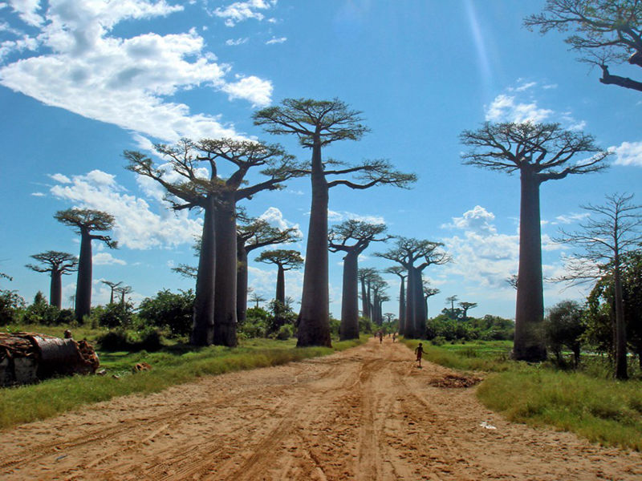
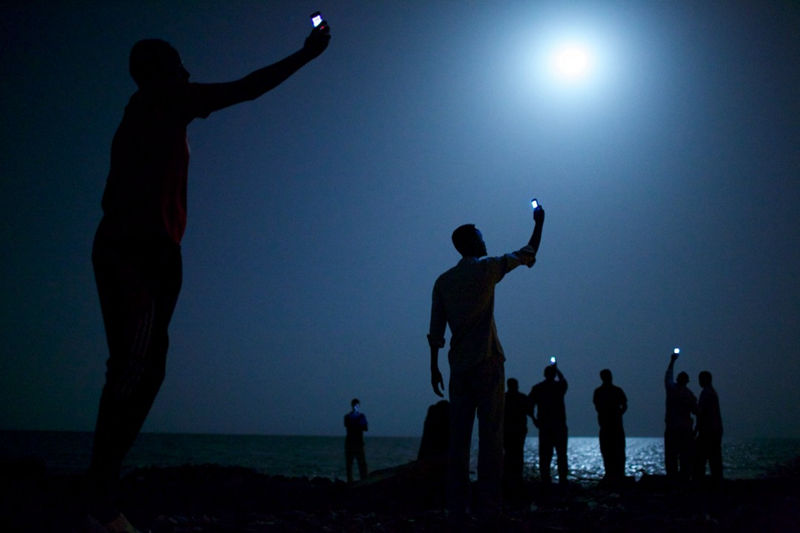
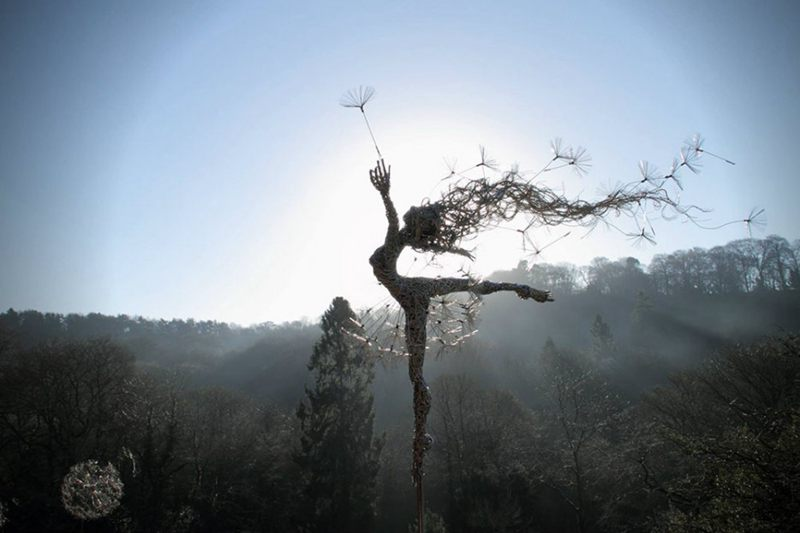
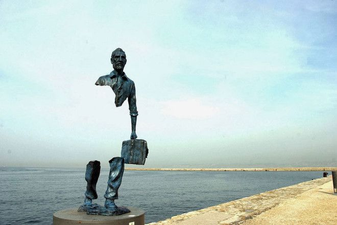

网站首页
奇·趣事
潮·科技
美·奇迹
趣·美味
关于
关于我们
广告投放
19-02-21
17个形态怪异的雕塑
更多
首页
> 美·奇迹
中国
古镇
美景
陶渊明笔下8个中国世外桃源，云南坝美真如桃花源
说到陶渊明，大家最先想到的就是他的《桃花源记》和他的脍炙人口的诗句“采菊东篱下，悠然见南山”，陶渊明向往世外桃源，生活在喧嚣之中的我们又何尝不向往呢！虽然那只是很美好的想象，但是现世中还是有一些地方犹如世外桃源，这些地方...
admin
美·奇迹
2099-09-06
583
树木
森林
湖泊
美景
8个与众不同的森林，像来自外星球

在我的印象里，森林就是有很多笔直、郁郁葱葱的大树组成，没什么特别之处。不过世界之大，无奇不有！世界上也存在一些比较特别的森林，它们有的底部的树干是弯曲的，有的树干肥大能储存食物和水，有的树长在了水里，更奇怪的是还有彩虹色...
admin
美·奇迹
2099-09-06
259
摄影大赛
摄影
10幅世界级摄影大赛获奖作品，让你对自然、社会和人生有所感悟

一直以来，每次看那些比较好的作品都只是抱着欣赏的心态，都只觉得特别漂亮或者是有趣，都是夸赞一句或者笑笑就过去了，从来也没有好好思考摄影师真正想要传达的思想，想要传递的一些深层意义。其实，那些照片都是摄影师们在用镜头表达自...
admin
美·奇迹
2099-09-06
390
世界之最
美景
世界上8个最惊心动魄的景点
小伙伴们，每到假期是不是都有些烦躁呢？因为不知道要怎么度过，想要出去玩时，但是一想到那些景点人满为患就瞬间没了兴致。不过，还是有一些风景独到的地方并没有那么多人哟。如果你不恐高，够勇敢，想要看到不一样的风景的话，就仔细看...
admin
美·奇迹
2099-09-06
383
美景
游泳
海滩
沙滩
中国
八大中国最美海滩，夏天游泳好去处
炎炎夏日，为了能清爽一下，游泳池就成了大家常去的地方，恨不能24小时泡在水里，可是人太多，总觉得游泳池太拥挤，那么，其实你可以考虑去海边游泳，最棒的是，去到那些美丽的海滩，不仅能游泳，而且还可以欣赏美景。那么，今天置顶表...
admin
美·奇迹
2099-09-06
318
中国
瀑布
美景
22个中国最美最酷瀑布，你去过哪一个
中国的美景数不胜数，中国美景中的瀑布更数不胜数，置顶表情小编收集了中国最有名气的22个瀑布，快来看看你去过哪个，你最喜欢哪个呢？黄果树瀑布位于贵州省安顺市，是黄果树瀑布群中最为壮观的瀑布，也是世界著名大瀑布之一，以水势浩...
admin
美·奇迹
2099-09-06
211
公园
美景
雕塑
用不锈钢丝编织的婀娜仙子

在英国的特姆花园中，你会看到在风中翩翩起舞的仙女雕塑。你会认为这么婀娜的女神雕像是用一种植物或者藤蔓编织而成，错了，其实这些雕塑是用不锈钢丝制成的。英国的艺术家罗宾·怀特（Robin Wight）采用不锈钢丝，缠绕成带有...
admin
美·奇迹
2099-09-06
244
建筑
雕塑
17个形态怪异的雕塑

小编收集了一些来自世界各地比较有趣的雕塑。有捕鱼的小男孩、多瑙河边的鞋、水下的美女、怪异的蜘蛛等等，从这些雕塑中，我们可以看出艺术家们做这些雕塑所展示出的艺术创意。来欣赏一下吧！法国 马赛 旅行者雕塑 ?美国 ...
admin
美·奇迹
2099-09-06
242
世界之最
海滩
美景
世界上38个惊人的美景，有胆你就去
在这个世界上有很多我们已经知道的也有不少人都去过的特别美丽的地方，但是还有一些比较美丽但是由于地理位置比较危险条件限制只有一些特定人们才去看过的地方，那些地方也是一样特别有魅力的。虽然，我们不能亲自去到那些惊人又美丽的地...
admin
美·奇迹
2099-09-06
195
拍摄
摄影
倒立风景摄影，将几何与摄影完美结合
现在越来越多的人喜欢户外旅行，更喜欢用镜头记录下自己走过的路，见过的风景，其实，如果后期可以将自己的摄影作品稍作技术的修改，增添一些新的元素，也许你会发现不一样的风景。比如，摄影师Victoria Siemer就将几何与...
admin
美·奇迹
2099-09-06
284
随便看看
2099-09-06
10幅世界级摄影大赛获奖作品，让你对自然、社会和人生有所感悟
倒立风景摄影，将几何与摄影完美结合
2099-09-06
用不锈钢丝编织的婀娜仙子
2099-09-06
22个中国最美最酷瀑布，你去过哪一个
2099-09-06
热门文章
2099-09-06
中国各地土得掉渣的美食
2099-09-06
陶渊明笔下8个中国世外桃源，云南坝美真如桃花源
2099-09-06
人类以外最聪明10大动物，乌鸦也能榜上有名
热门标签
微距摄影
摄影创意
咖啡店
皮卡丘
水果盘
美食
食物画
国家
国旗
水果
话剧
古镇
湖泊
树木
摄影大赛
沙滩
瀑布
公园
美景
海滩
拍摄
充电
灯具
充电器
矿泉水瓶
矿泉水
智能手环
情侣
自行车
空气净化
智能家居
智能
家居
凤凰塔
武汉
遛狗
绳子
穿戴设备
手表
概念手表
概念设计
腕表
野生动物
动物
小镇
地下城
童话
酒店
建筑
垃圾桶
关注我们 么么哒！
自媒体新浪微博
新浪微博
自媒体腾讯微博
腾讯微博
1234567890
QQ号
admin@youweb.com
邮箱
某某博客
微信公众号
关注我们的公众号